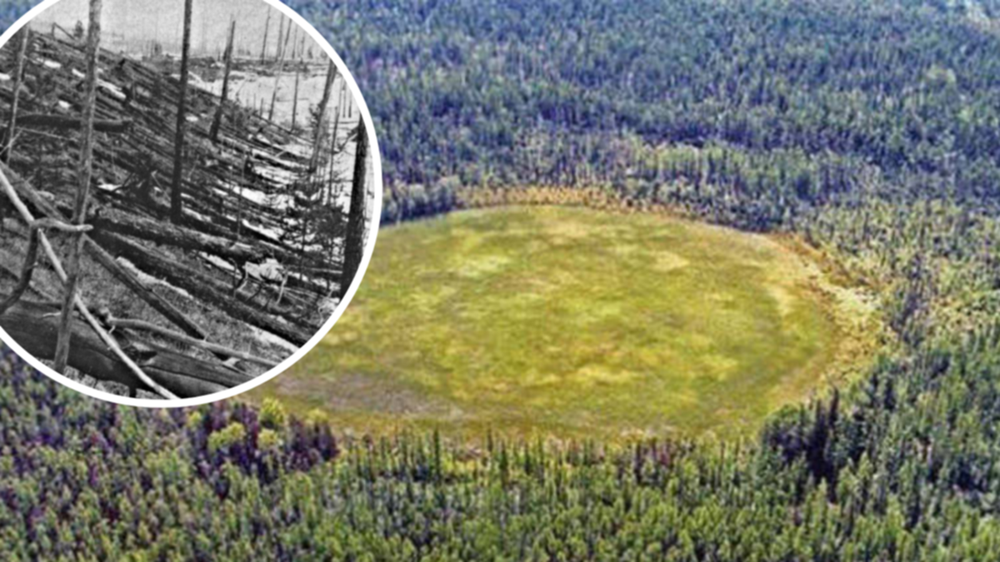
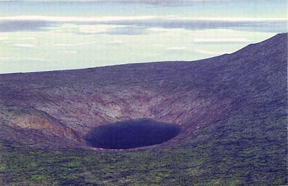

The Tunguska Event
At 7.17am on June 30th, 1908, a huge object exploded six miles above the Stony Tunguska River area, central Siberia, causing an atmospheric shockwave that circled the Earth twice. For the following two nights the skies of Europe and Asia were unusually bright. The glare in the sky was compared to the atmospheric effects that followed the volcanic eruption at Krakatoa in 1883.
In 1921, Leonid Kulik, a geologist at the Mineralogical Museum of the Soviet Academy of Sciences, came across an old newspaper clipping about the explosion. He travelled to Kansk hoping to find a giant meteorite that the newspaper said was buried nearby, but on examination it was merely a natural rock that was wrongly attributed to the event.
Over the following years more eyewitness testimony was collected and it was anticipated that a huge crater and meteorite was likely to be found in the area. Kulik obtained funding for a proper expedition in 1927; he had to use horses and then sledges pulled by reindeer to traverse 435 miles of frozen countryside. Using local guides he found a vast area of trees knocked down and uprooted as if dashed down by a giant hand. Odd clumps of trees remained standing but they were stripped of bark and foliage.
As they got closer to the epicentre of this devastation Kulik’s guides abandoned him, overcome by superstitious fears. The indigenous Evenki people believed that Ogda, the god of fire and thunder, had returned to strike them down with invisible fire.
The Soviet authorities edited out any such references to the event. It was not until 1967 that a shaman called Ivan Ivanovich Aksenov admitted he was only 30 miles south of the explosion. He said he saw ‘the Devil’ with two eyes in front and a fire behind, flying to the south. He observed that ‘The devil was going faster than airplanes now do. While flying, it was saying ‘troo-troo,’ but not loudly.’ He was so shaken that he prayed to Jesus Christ and the Virgin Mary.
Yet despite his stubborn search for evidence of a giant meteorite and/or crater, Kulik’s efforts proved fruitless. After his last expedition in 1939, the area was neglected until the 1950s, when aerial surveys identified a butterfly-shaped area, 43 miles in radius, containing 40,000 fallen trees. Analysis of soil samples found globules containing nickel, cobalt, copper and germanium in them, many of them fused by high temperatures – perhaps 30 million degrees Fahrenheit – and similar to substances found at meteorite sites.
It had been clear for a long time that the event was caused by a fiery object that flew from southeast to northwest before exploding. As early as 1930 it had been suggested that the impact was that of a comet with a mass of several million tons and that its attendant dust trail had caused the night glows seen throughout the world after its arrival. Yet no comet had been seen approaching the Earth. The best explanation is that it could have been a fragment from Comet Encke.
The arguments about its origins opened the field to fanciful explanations. After the A-bomb explosion at Hiroshima, science-fiction writer Alexander Kazantsev speculated in 1946 that the Tunguska event had been caused by the explosion of a nuclear-powered spaceship. This idea was furthered by several Soviet scientists, including Alexei Zolotov who claimed the craft was carrying ‘beings from other worlds’.
The causes of the massive explosion, hundreds of times larger than that of the Hiroshima bomb, are still debated. An asteroid, anti-matter rock and a black hole have all been suggested. Other theories are that it was the manifestation of massive geo-physical forces, ball lightning, a laser beam from another star system or the secret testing of a wireless transmitter of energy by inventor Nikola Tesla. Most scientists, though, believe that it was caused by a meteoroid exploding 3–6 miles above the Earth.
The Spaceguard organization, which studies the threat posed to the Earth by collisions with asteroids and comets, thinks that we should prepare for the future appearance of another Tunguska-like object. Jay Tate, Director of the Spaceguard Centre, says: ‘Tunguska-sized events may not put the whole of the planet at risk, but the local damage is extreme. Had the Tunguska object hit London every structure inside the M25 would have been totally destroyed.
‘We would expect an event of this size every century or two. Actions to mitigate the hazard would be difficult. Near-Earth Orbit search programmes in the US are concentrating on large objects (1km and larger). Follow-on projects to detect smaller objects have yet to get underway. Detecting objects as small as the Tunguska one would not be impossible but would be expensive and time consuming.’
Each theory has its own proponents and opponents, which ensures that the mystery of what visited Siberia on that day in June 1908 will rumble on for many years to come.
Source: History Today